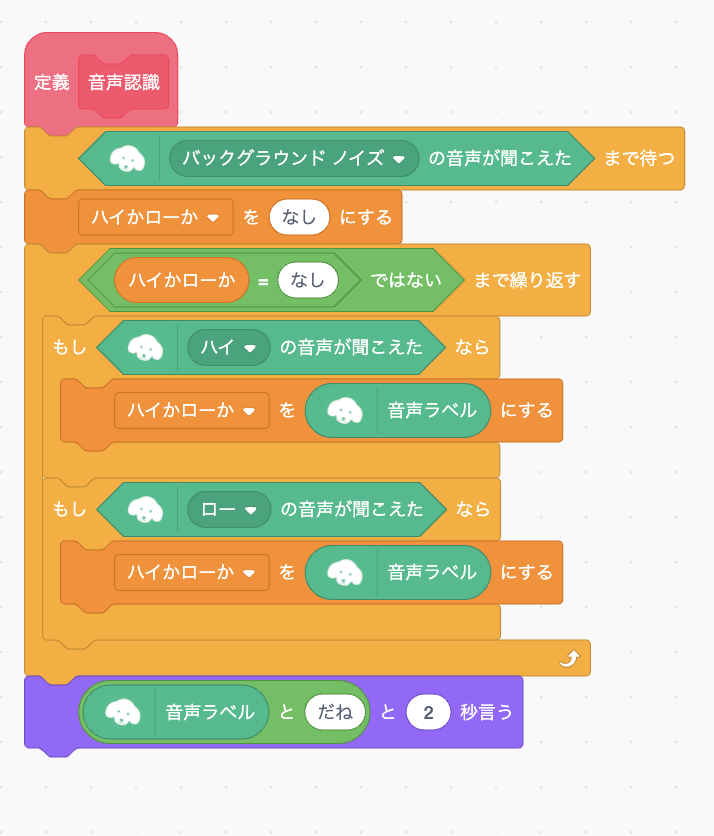
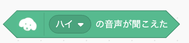
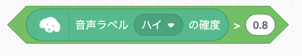
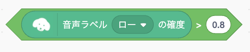

6. 音声認識ブロックをつくろう
1
音声認識ブロックをブログラミングする
つぎに音声を認識するためのブロックをつくります。 先ほど作った「音声認識」ブロックの中身を次のようにプログラムしてください。
このオリジナルブロックはマイクで録音した音声が認識されるまで「もし」ブロックを繰り返し、認識したらその音声を「ハイかローか」変数に入れます。
2
音声認識ブロックをテストする
音声認識ブロックが正しく動くかテストしてみましょう。 「定義 音声認識」ブロックをクリックしてマイクに向かって「ハイ」か「ロー」と話してください。 正しく認識すると「〜だね」というメッセージが表示されます。
チャレンジ1
周りが騒がしいとうまく音声を認識してくれないかもしれません。 その場合は「もし」ブロックの中にある

ブロックをそれぞれ
 に置き換えてみましょう。 するとうまく認識するようになるかもしれません。 このブロックは「ハイまたはローの音声である確率が80%より大きければ」ということを意味しています。
チャレンジ2
それでもうまく音声を認識しない時は、仕方ないので「調べる」メニューの中にある「〜と聞いて待つ」ブロックを使って「ハイかローか」変数に値を入れましょう。